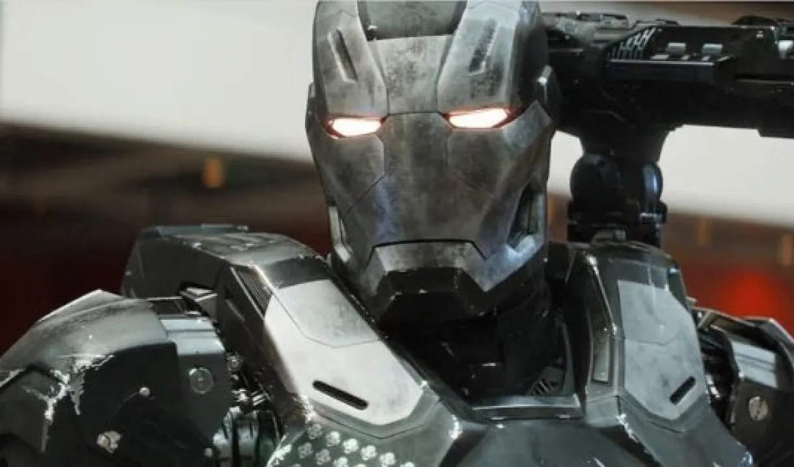

前言
不管原著漫畫，整個 Marvel 漫威電影宇宙中的靈魂人物絕非「鋼鐵人」東尼史塔克 Tony Stark 莫屬，而由他主導的「史塔克工業 Stark Industries」更是這個電影系列中的黑科技研發擔當！除了史塔克工業打造的各種武器之外，最讓觀眾影迷還是東尼史塔克數十套的「鋼鐵人動力服」（Iron Man's armor，粉絲普遍稱「裝甲戰甲」或以「裝甲」簡稱。） 在電影系列中，撇除為小辣椒、浩克、戰爭機器、蜘蛛人設計的裝甲，實際出現的鋼鐵人裝甲一共有 50 套（型號多達 85 型，但其中第 49 型為專為小辣椒量身定做的「救援 Rescue」裝甲，而第 51 至 84 型僅被提及，並未正式登場），但在這 50 套中又有哪些是超級重要，大家一定要知道的存在呢？
角色介紹
「馬克 4」於電影《鋼鐵人 2》中登場，就某種意義上來說是「鋼鐵人．東尼史塔克」的第一套裝甲，怎麼說呢？在《鋼鐵人》第一集電影中，東尼在阿富汗遭「十環幫」囚禁時利用簡陋工具所製造了裝甲「馬克 1」，後來又打造了同為鐵金屬色的「馬克 2」；待東尼回到紐約後，打造了第一套紅金配色的裝甲「馬克 3」，那是《鋼鐵人》第一集電影最主要的裝甲，也是「鋼鐵人」的第一套正式動力服，但此時眾人還不知道鋼鐵人就是東尼史塔克，在第一集電影最後大戰結束後「馬克 3」全毀，東尼向大眾坦承自己就是鋼鐵人，並且穿上「馬克 4」開啟他在漫威電影宇宙的傳奇！
「馬克 4」的外觀乍看之下跟「馬克 3」差不多，差別在於「頭盔」是全型設計過的，身體方面「馬克 4」比「馬克 3」更加修身，有更多圓滑流線跟許多稜角的設計。功能方面，除了「馬克 3」固有的「掌心光束」跟「肩部六連裝微型子彈發射器」外，增加了裝甲手腕內的「小型飛彈」等武器；飛行速度也較「馬克 3」更快，另外一個比較冷僻的功能還包含「能把尿液過濾成飲用水」的過濾功能……
「馬克 7」是鋼鐵人在《復仇者聯盟》第一集電影中最後大戰所穿的裝甲，它的指標性在於，在此之前的鋼鐵人裝甲都是裝在「手提箱」中，以攜帶的方式讓東尼史塔克著裝，但「馬克 7」則拋棄了「手提箱」改良為「主動著裝」的設計。
在外觀的部分，除了基本紅金兩色配色，「馬克 7」多了些許的銀色塗裝點綴。武器方面則在肩膀、手腕、大腿的地方都多增加了「引導式微型飛彈 guided micro-projectiles」、「大型穿甲飛彈」、「小型飛彈」的發射等，並且能透過多對多瞄準系統進行一次性的全彈投射。
「馬克 85」是東尼史塔克在《復仇者聯盟：終局之戰》中最後一戰所穿的戰服。在《復仇者聯盟：無限之戰》至《復仇者聯盟：終局之戰》開場時東尼所穿的戰服為「馬克 50」，而在眾人抵達薩諾斯引退居住名為「花園」的星球，索爾將薩諾斯砍頭後，眾人發現「彈指」無法被逆轉後，所有的復仇者們消極的度過了五年的時光；而在這五年裡，東尼與妻子小辣椒隱居在一棟河邊小屋，並育有一個女兒摩根。
但電影沒講，而是出現在周邊相關電影設定說明書籍中的內容卻表示，其實東尼仍在這期間研發了「馬克 51」至「馬克 84」的多款鋼鐵人裝甲；而在「蟻人」史考特朗恩提出了可透過「量子領域」前往平行世界的過去時間「借用」無限寶石來逆轉「彈指」後，東尼才穿上最新研發的「馬克 85」上場！ 「馬克 85」在設計上大致與「馬克 50」相同，在電影裡的設定上同樣使用了奈米科技，但是多增加了許多在手臂、大腿等處的「金色」塗裝，這是為了還原並致敬原著漫畫中經典配色；在功能上，「馬克 85」比起過往的鋼鐵人裝甲能更快速的在極短時間內完成著裝與卸除；而比起掌心與胸口能發出衝擊光束、利用奈米粒子即時製作出雙刃能量劍、雙腕大型能量砲等「馬克 50」也有的標配武器外，「馬克 85」還多了大型能量護盾、可吸收轉換索爾雷電的能量砲、能焊接或切割物體的噴焰、作為冷凍治療用的奈米粒子噴霧……等功能。
但最讓人稱奇的，還是「馬克 85」擁有能取代「無限手套」的這項黑科技功能，除了能承載無限寶石外，還能有效「彈指」……（東尼史塔克居然能在短短五年內就參透上億年的遠古宇宙魔法科技，這已經不是天才的問題了，這個設定真的不是 BUG 就是在說東尼史塔克根本是神了……）而在《復仇者聯盟：終局之戰》最後，「馬克 85」的頭盔被作為立體投影裝置播放東尼死前預錄的遺言投影……
補充：戰爭機器 VI / War Machine Mark VI

在電影中，「戰爭機器」的裝甲基本上跟鋼鐵人裝甲很類似，那是因為第一代的戰爭機器裝甲就是回收鋼鐵人「馬克 2」裝甲改造而來。而截至《復仇者聯盟 4：終局之戰》為止，戰爭機器裝甲一共有七套，但最受關注的則是第六型「戰爭機器 VI 」。
「戰爭機器 VI 」裝甲是戰爭機器在《復仇者聯盟 4：終局之戰》中，進入「量子領域」穿越到過去與涅布拉一起「借用」力量寶石時所穿的戰甲。「戰爭機器 VI 」除了一般作戰用之外，也可同時兼當「量子戰衣」使用，外型上類似嚴格意義上專為戰爭機器設計的第一個裝甲型號「戰爭機器 II / War Machine Mark II」（型號「戰爭機器 I」僅是由鋼鐵人「馬克 2」改造而來）。但武器方面「戰爭機器 VI 」除了架設於右肩處的重型機槍外，並沒有附上其他武裝……